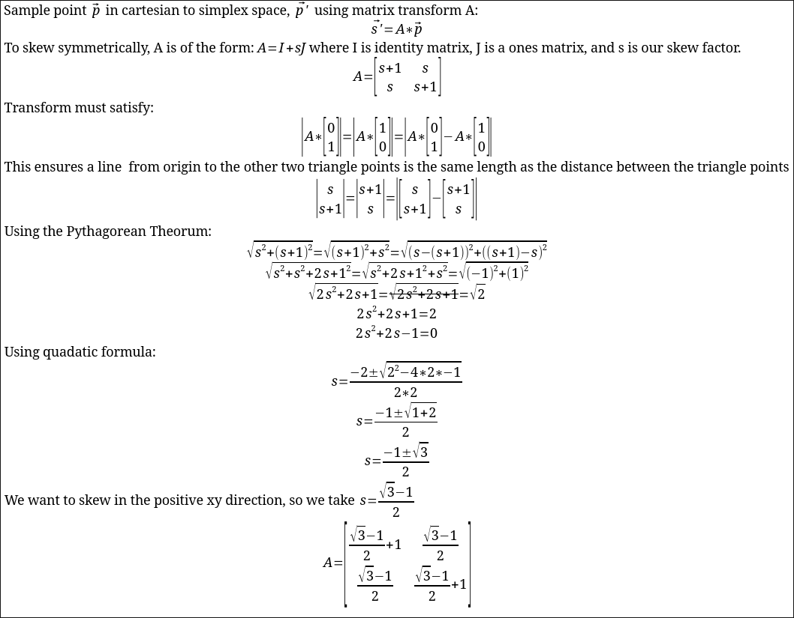
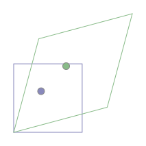
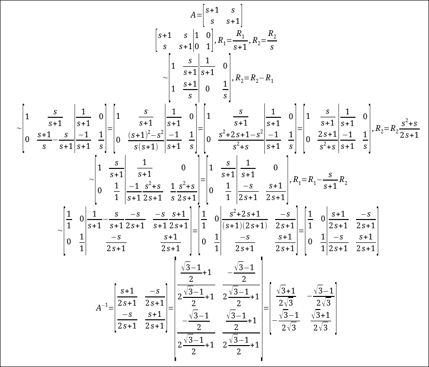
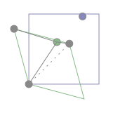
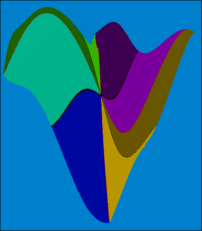
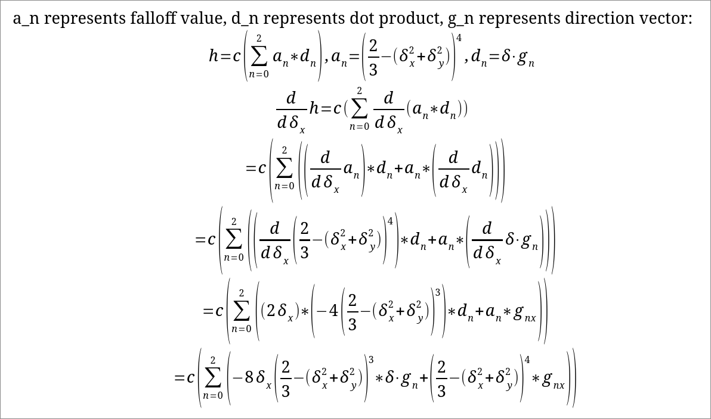
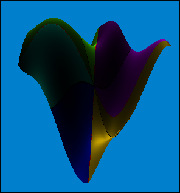

This page is meant to explain OpenSimplex2, and is not important to the flight controller.
Simplex noise is a continuous function, in my case in 2d, that is meant to create natural looking noise patterns. When generating the terrain, this function is sampled in regular intervals to produce a heightmap, which can then be rendered. To take a sample, first generate a direction vector at each adjacent lattice point. Then, caclculate the dot product from the lattice point to the sample point. Finally, apply some function to the distance to attempt to blend each weight (in our case, (2/3-d)^4 if d>2/3, otherwise 0). This function should ensure that a sample is not influenced by a lattice point more than 1 (triangle) unit away (otherwise, it becomes discontinuous).
In order to improve the look of the noise, and make it faster to compute, simplex uses a triangular lattice, unlike Perlin noise (the predecessor), which uses squares. Using triangles means that for any point inside the triangle, you only need to sample 3 vertices instead of 4, and the distance between the point and the grid points is more uniform (i.e. we don't get as much of a dip in the center of the shape as we do with squares).
Since the end goal is to be able to sample cartesian space, but have it act like simplex space (i.e. we get grid points in a triangle instead of a square grid), we would want to work in a space where the integer cordinates are triangle gridpoints. Since a square is made of two right triangles, we can instead sample a cartesian space like normal, then squish it so that all angles become 60°. However, if we just transform our space this way, we will end up putting pixels in the wrong location (i.e. our sample point is still at (x,y), but its value is now sampled from (x',y')). To fix this, we first apply the inverse operation. Now, we have a space, where when we skew it as described before, our input point is in the same location as the sample point.
The first step is to transform our coordinates into the triangular space. Fortunately, a skew into equilateral triangle space, and the inverse skew applied to a cartesian grid, both end up in (different) triangle spaces. This lets us choose any equilateral skew, with the garentee that a square grid overlayed in that new space will become triangular when we revert the skew.

To visualize the transform, we have here 1 grid square (blue) being skewed into the simplex space (green).

Next, we calculate the inverse transform, which can be done by augmenting the matrix with the identity matrix, then perforrming linear operations until they switch places (not necessarily the easiest method, but I find it straightforward and easy to remember).

Then, we separate the integer and decimal components of the sample point in simplex space. We can unskew the decimal component to get the cartesian coordinates of the point relative to the next lattice point, which is the integer component. We can then check which side of the line y=x it sits on, so that we know which 3 lattice points are closest. We can then unskew the other two relative lattice points (the first one is [0,0], corresponding to the integer components, which inverse transforms to [0,0], while the other points are [1,1] and either [1,0] or [0,1], which can be inverse transformed the same way as the sample point).

Now that we have three integer cordinates for the closest 3 points, as well as their cartesian locations, we can calculate the output value. The integer coordinates each get put through a hash function, with the seed. The seed allows us to change what the noise looks like, while being able to also generate the same noise map deterministically. This function has to return a direction vector (note that the steps for obtaining the vector are arbitrary, and there are many ways to achieve the same result). First, I combine the bits of the x and y components and hash it using hash64shift. Then, I xor the result with the seed, and put that through the splitmix hashing function. Finally, the lower 16 bits are converted into an angle, and the upper 48 are converted to a scale. Since the scale generally wants to be closer to 1 (smaller scale means less noisy noise), I also square root the scale. The scale and angle are then converted to a vector using sin and cos.
Now that each lattice point has a vector, we calculate the delta between each point in cartesian space and our sample point, dot that with the point's vector, calculate the square distance between the point and the sample, apply a falloff function to the distance, multiply that with the dot product, and add them all together. The falloff I choose is ((2/3)-n)4. The last step is to multiply the result by a constant to make sure the function is approximately 0 to 1 (this can be done by generating a large heightmap, finding the max and min values, and dividing by the max value, in my case around 0.02).
Generating a mesh using this function, we get a noise map (this one is a 1x1 patch with no additional scaling).

It looks a bit flat, so the next step is to add normals (the direction that the heightmap faces). We can do this by finding the derivative of the heightmap, constructing the vector [dh/dx, 1, dh/dy], then normalizing it (dividing by its magnitude).

Now, it looks much better (the light source is up):
